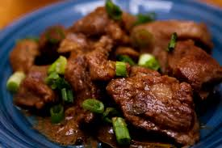

Adobo Recipe
Home

Description
Chicken Adobo is a classic Filipino dish that combines tender chicken pieces simmered in a savory mix of soy sauce, vinegar, garlic, and bay leaves.
The balance of salty, tangy, and slightly sweet flavors makes it a comfort food favorite across the Philippines.
This dish is incredibly versatile — it can be served with steamed rice, fried rice, or even enjoyed cold the next day.
Cooking it slowly allows the chicken to absorb the rich sauce, resulting in a tender and flavorful meal that’s perfect for family dinners or casual meals.
Ingredients
- 2 tablespoons neutral oil
- 5 chicken drumsticks
- 5 bone-in chicken thighs
- 1 large yellow onion, quartered and sliced 1/4 inch thick
- 8 cloves garlic, smashed
- 5 bay leaves
- ¼ teaspoon whole black peppercorns
- 1 cup cane vinegar (see Tips) or unseasoned rice vinegar
- ⅓ cup reduced-sodium soy sauce
Directions
-
Heat 2 tablespoons oil in a large pot over medium heat until it starts to shimmer.
Add 5 drumsticks and cook until brown on all sides, 4 to 6 minutes.
Transfer to a plate. Add 5 thighs to the pot and cook until browned, about 3 minutes per side.
Transfer to the plate with the drumsticks.
-
Add 1 onion, 8 garlic cloves, 5 bay leaves and 1/4 teaspoon peppercorns to the pot; cook, stirring occasionally, until the garlic just begins to brown, about 3 minutes.
Add 1 cup vinegar and 1/3 cup soy sauce and bring to a simmer, scraping up any browned bits.
Return the chicken to the pot and turn to coat with the sauce. Reduce heat to maintain a gentle simmer, cover and cook, stirring occasionally, until the chicken is very tender, about 1 hour.
-
Transfer the chicken to a clean plate and cover loosely with foil to keep warm.
Bring the sauce to a boil and cook, stirring often, until reduced by about one-third, 3 to 5 minutes.
Serve the chicken with the sauce.
Credits © Eatingwell.com